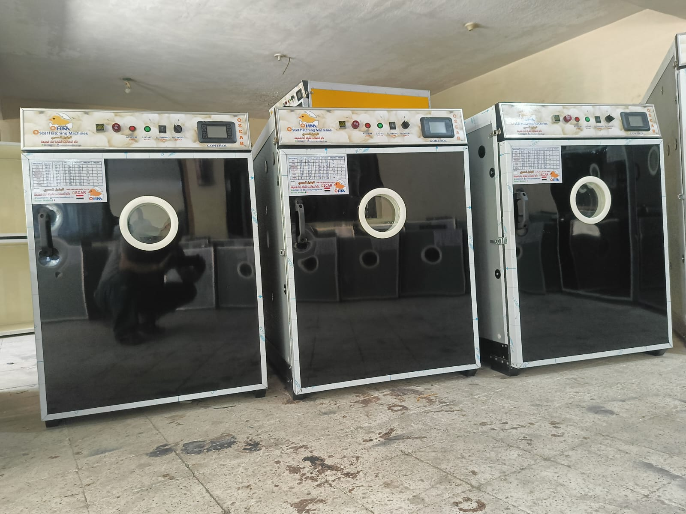

موديلات متعددة
ماكينات تفريخ بسعات وموديلات متنوعة
هذا البند مناسب لإظهار التنوع الحقيقي في القسم بدل إظهار موديل واحد فقط، وهو ما يرفع ثقة العميل ويسهّل النقاش حول السعة المناسبة.
- مناسب للمشروعات الجديدة أو التوسع في الإنتاج
- يساعد العميل على فهم أن الخيارات ليست محدودة
- مفيد للمقارنة السريعة قبل طلب عرض السعر